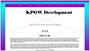
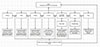

Client and Topic
The website will be a prototype for my spouses’ business that she would like to own one day. My spouse is a collegiate softball coach and would eventually like to own her own training facility and amateur travel team. The website would be for her training facility and information on the travel team.
Development Process and Engagement
My spouse is the client in this instance, therefor, she will be involved in every step to make sure the website meets all demands and proper functionality. Full research into other training facilities and travel organizations will help provide a great depth of background knowledge to complete the task. Upon completion of research a wireframe and storyboard will be created to give a better vision to present to my spouse before development.
Testing
To test the website after development I will open the site in Safari, Mozilla FireFox, Windows Edge, and Google Chrome. I will navigate through each webpage to ensure all CSS properties are working properly. After confirming CSS, I will then navigate through all links, menus, buttons, and navigation bars to confirm all functionality is working. This process will be done on all browsers, along with using the web browsers’ discovery to adjust screen size for checking all breaking points.
Description
My spouse is currently a head collegiate softball coach; however, she does not want to coach at the collegiate ranks for that long. When retiring from collegiate athletics she is wanting to start her own skill development and training facility for baseball/softball players. The website will allow for individuals to look up and learn more about the facility, reserve a time slot for use, reserve a lesson with an instructor, signup for camps, or links to related topics, and learn about her amateur travel ball organization. There are many uses that will allow my partner to grow her business and brand.
The intended target audience ranges from 8-24 years old as this is the age of sports and development for individuals before moving onto careers or school ends. However, the website needs to appeal to all ages as parents typically handle scheduling of kid’s events. Knowing the audience changes the language, style, and format of the website. I will help to create a logo and favicon for the website and the brand of her business. As the intent is to allow individuals to schedule lessons and host events at the facility, the website will need continual maintenance and updates.
Growth and Maintenance
As my spouse’s business takes off and grows, the website will have to adapt and evolve with the business. As the training facility develops, the travel ball organization grows, and her products start to sell, the website will need continually updates and maintenance to keep up to date. With selling products and having a potential blog or forum will require frequent updates to the website.
Organization
The website will feature a home page with a banner and navigation bar at the top. The home page will describe the skills and development facility and the mission/purpose of the business. The navigation bar will link to a hitting, pitching, fielding, and contact page. Each page will describe that specialty of the facility and the instructors for that specialization. The contact page will feature a master calendar that highlights the availability for lesson or lane reservations, locations, and a message intake form. Across the top of all the pages will be the same banner that links to the home page, along with a horizontal navigation bar with a link to each page. As well, all pages will be interlinked through the footer.
Wire Frame for Home Page
Wire Frame for Shopping Page.

Story Board for Website
Security
The website will not need an e-commerce component at launch; however, after the business grows there are plans for sales of merchandise and tunnel reservations through the website. When these changes are launched and added the website will develop an e-commerce component. When these changes are implemented, the website will need and SSL for accepting personal information for payments. When merchandise and reservations are added to the website there will be a need for customers/clients to create an account to hold and remember their information. As the developer I will make sure to select the appropriate hosting company, make sure to properly test all components of the website, set up automatic backups, manage add-ons and plugins, and select the proper content management system to help ensure security of the website.
Web Hosting
The criteria that will determine the web hosting site I will use is cost, storage, speed, and reliability. Each one of these categories is key to the success of owning and operating a website for most profitable gain. The website will host a fully functioning master calendar and a shopping cart, that will allow individuals to reserve lessons, cages, or purchase merchandise and camp tickets. The entire website will be developed using HTML5 and CSS Languages, while JavaScript will be utilized to allow the calendar and shopping cart to function properly. An SSL will be needed as private information will be taken to secure payments. A few examples of available domains would be diamondsunleashed.com, unleashedhitting.com, and dsunleashed.com. A few web hosting sites would be bluehost, dreamhost, godaddy, and hostgator.
Marketing
The website will be marketed by using a combination of physical advertisement (flyers), email marketing, Search Engine Optimizations, Pay Per Click Advertisements, and Social Media Advertisements. The combination of each category of advertisement is crucial to spread the word about the business and website. The website will use a combination of single words tagged to draw attention to the website and place the site in best chances for traffic and viewership.
Project Reflection
During the development of my final project proposal, I did not run into much trouble. The biggest issue was gathering the information and mental brainstorming a layout for the website, to implement into a flowchart. To complete the final project proposal, I utilities Microsoft Word for the document itself. As well, I used draw.net to create my flowchart for the layout of the website. I utilized Adobe’s XD to create the story wire frames for the home page and the products page. Through the process of planning the proposal it helped to create a great foundation of ideas and basis for creating the final product. The proposal was a great way to gather and organize all the information to create the website in a timely manner.
Creating the wireframe was a great way to get a true vision for the layout of the web page. The wireframe allowed the ability to plan the navigation bar, colors, and organization of two different pages. This will help to provide a visual to the client for approvals before the start of the building phase. The storyboard or flowchart was a great asset in planning the flow and navigation through each page of the website, it provides a guidance and layout of the functionality and linking of the pages. With having a detailed organized plan, it set up a blueprint for the continual maintenance and upgrades to the website. With having all the information organized together with templates, allows a team of individual to be able to understand the website and have a reference for building upon.